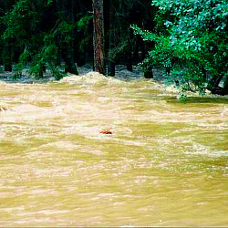

Ročník 2002
Atlantida – povodeň, Ostrovec 2002

Už jsem měl pocit, že nás nic nezastaví. Rok od roku se nám hlásilo víc dětí a ten loňský rekordní ročník žil v našich hlavách ještě dlouho přes zimu. Proto mě nepřekvapilo, když jsem na jaře dostal zprávu, že pravděpodobně překonáme rekord v počtu účastníků našeho tábora. Nic na tom nemohl změnit ani fakt, že jsme se po létech odpoutali od Generali pojišťovny, kde jsem ukončil svůj dlouholetý pracovní vztah a pro pojišťovnu přestal být tábor zajímavý. Dohodli jsme se, že plynule přejdeme pod CK Topinka a budeme „svoje“ tábory dělat dál. Nakonec, vždyť mě je úplně jedno, kdo nám dá svou záštitu a pod čí hlavičkou tábor funguje. Já i moji spolupracovníci si chceme jen hrát s dětmi. Po loňském triumfu hry ze starého Egypta jsem se rozhodl sáhnout po tématu ještě tajemnějším a vzdálenějším, o to více však atraktivním. Atlantida. Bájná říše mezi vodami, která si všechna svá tajemství odnesla s sebou do hlubin oceánu. Existuje tolik různých dohadů a teorií o tom, kde se tato říše nacházela, že nebyl vůbec žádný problém využít historické i „historické“ prameny a umístit centrum téhle bájné země přesně do míst mezi Varvažov a Ostrovec. S pomocí kamarádů jsem mohl psát tajemné vzkazy „originálním“ atlantským písmem a plán města Atlantis měl viset na nástěnce pro inspiraci všem našim stavitelům. Ano, chytali jsme se postavit novou Atlantidu, chtěli jsme obnovit bájnou říši a alespoň na dva týdny se stát středem celého vesmíru. Jenomže, podobně jako v té původní Atlantidě, i u nás zasáhli bohové a potrestali nás za naší zpupnost a pýchu. Seslali na nás svůj hněv a vzedmuli vody všech vod, aby nás obrovskou vlnou vyhnali z tábora do bezpečného útočiště ostroveckého kulturního domu.
Druhý den tábora jsme se i my stali obětí rozmarů příroda a naším údolím se přehnala povodeň zásobovaná vodou z dvou prolomených rybníků na horním toku řeky. Na rozdíl od jiných objektů stojících v údolí Skalice měl náš tábor nepředstavitelné štěstí podpořené předvídavostí jeho stavitelů. Voda se sice prohnala naší loukou, spláchla fotbalové hřiště a zdevastovala volejbalový plácek, ale stavení se nedotkla. Chatičky i srub hlavního vedoucího a klubovna se sociálním zařízením, postavené ve svahu, stály v bezpečné vzdálenosti od vzedmutých vod šílené říčky, která se přes noc změnila v dravý veletok. Jen jídelna se na okamžik ocitla v těsném sousedství kalné vody, ale naštěstí vzestup hladiny se zastavil na úrovni schodů na terasu. Stáli jsme na břehu ohromného bahnitého jezera a bylo nám jasné, že letošní tábor skončil. Byl nejkratší v mém životě. A nejsmutnější.
Obtelefonovat rodiče našich dětí, sehnat autobus a všechny odvézt v pořádku do Prahy byl nadlidský úkol. Celá republika se potýkala s obrovskou přírodní katastrofou a my jsme se snažili probít zaplavenými Jižními Čechami domů. To, že se nám záchranná evakuační akce podařila byl vlastně malý zázrak, ale co naplat – tábor skončil a s ním i doba růstu. Ještě jsme to netušili, ale další ročník se měl stát návratem ke kořenům…